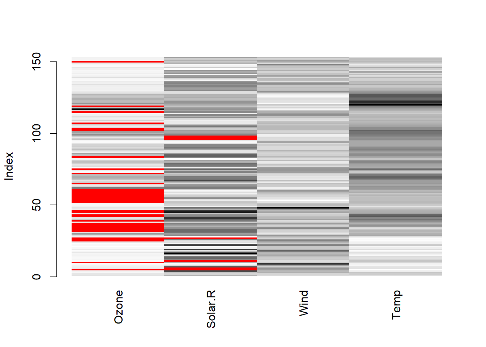
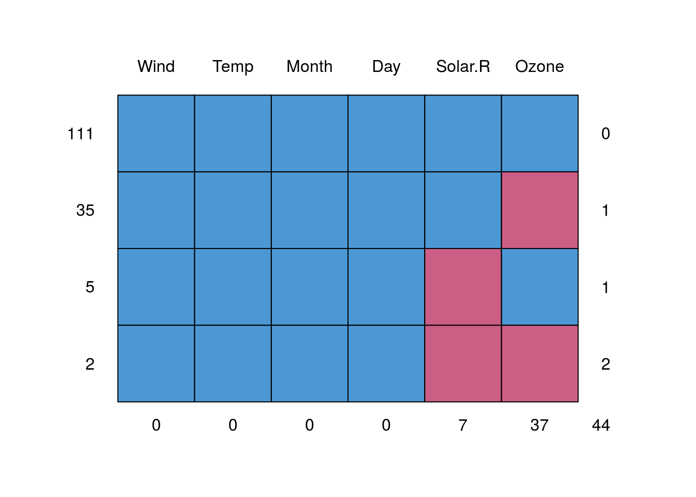
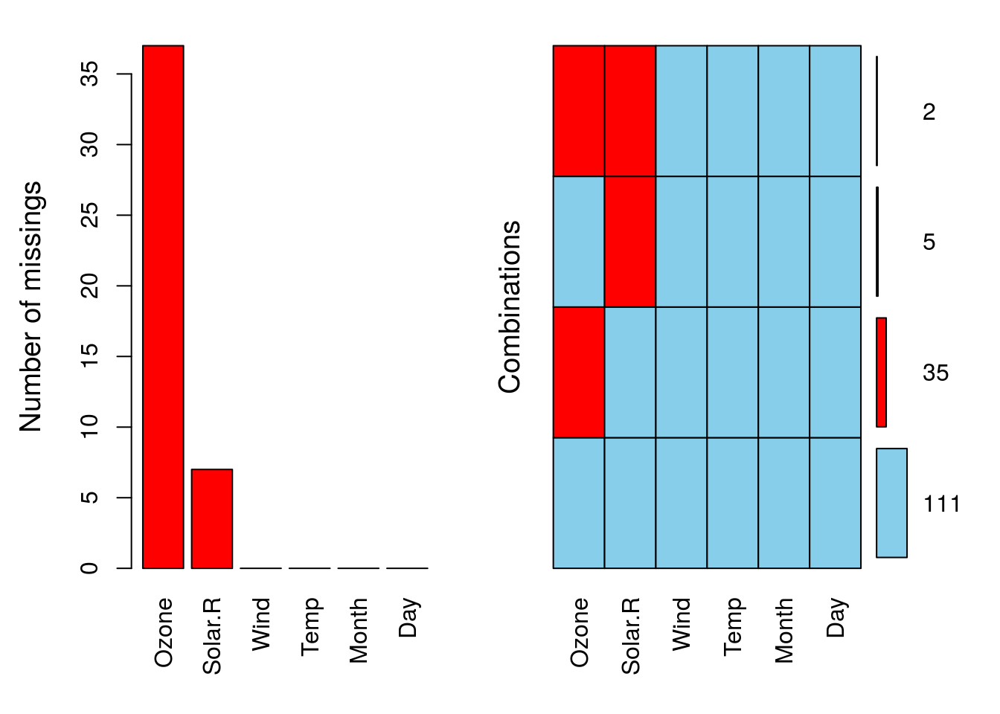
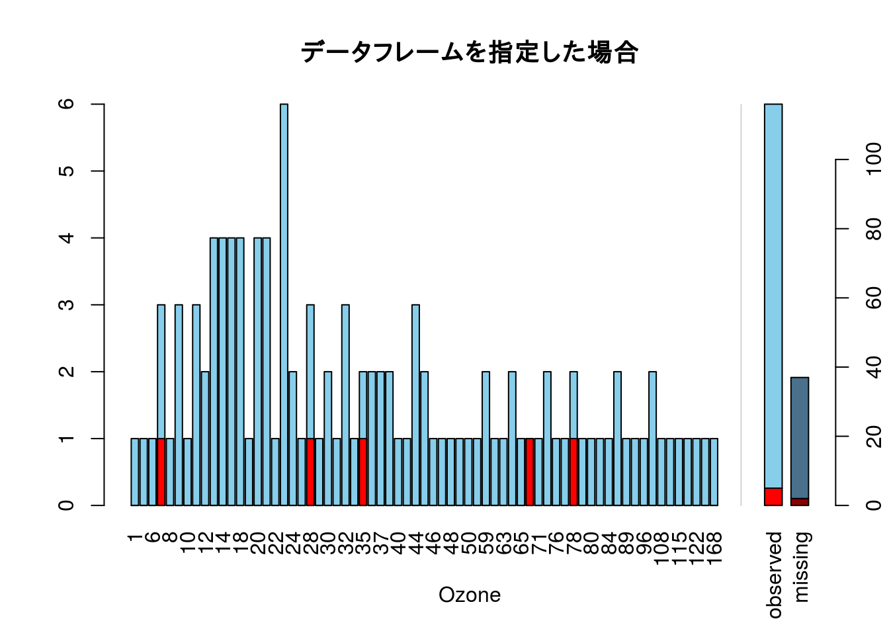
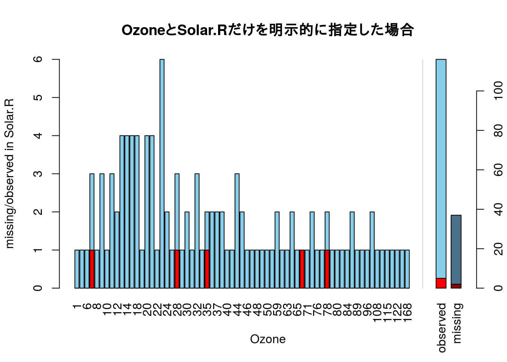
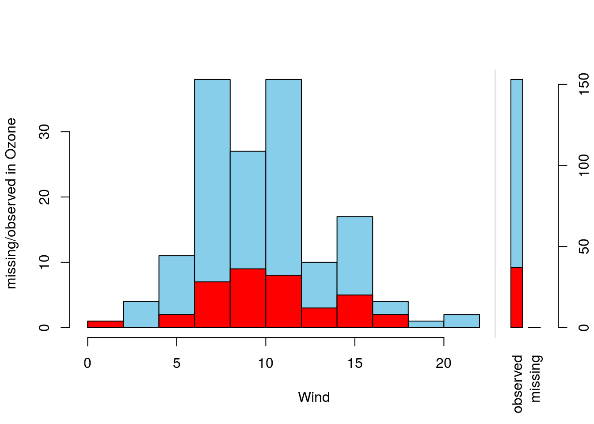
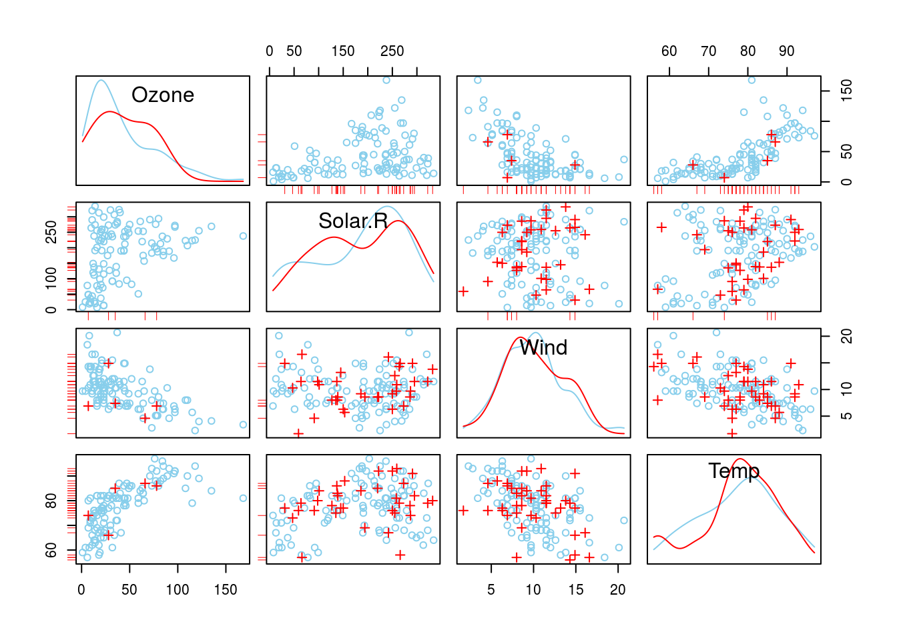
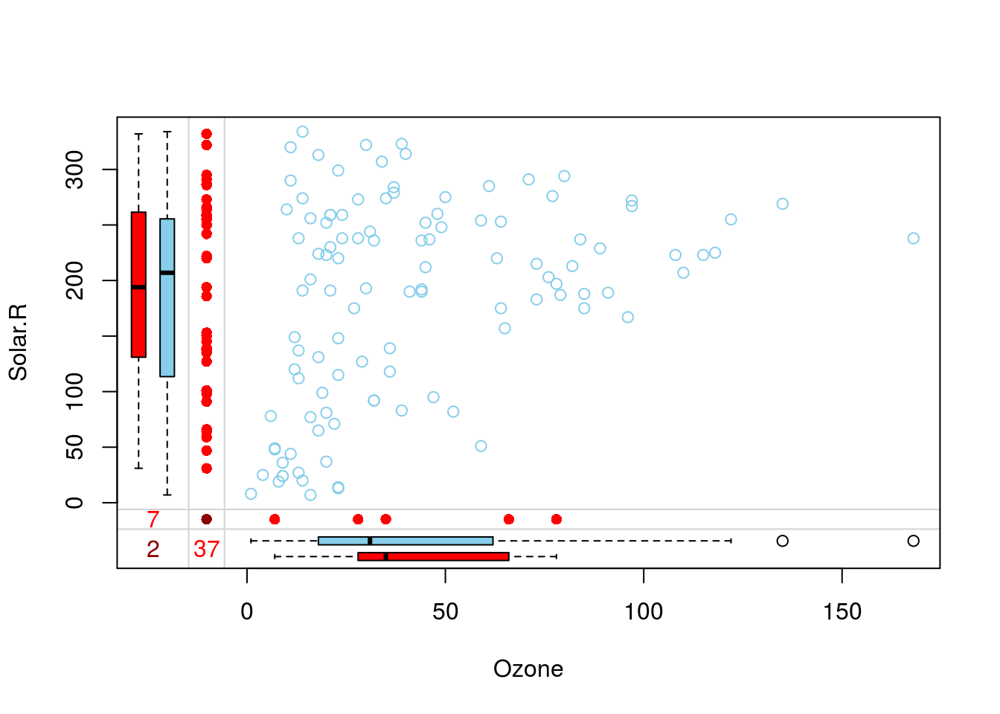

欠損を可視化する
データの欠損はその発生メカニズムにより対処方法が異なってきます。そこで、欠損に対して何等かの処理を行う場合には分析と同様に欠損を可視化することにより欠損のパターンを把握しておくことが大切です。
本ページでは欠損を可視化するのに有用な方法を紹介します。
なお、本ページではR version 3.4.4 (2018-03-15)の標準パッケージ以外に以下の追加パッケージを用いています。
| Package | Version | Description |
|---|---|---|
| tidyverse | 1.2.1 | Easily Install and Load the ‘Tidyverse’ |
| mice | 3.0.0 | Multivariate Imputation by Chained Equations |
| VIM | 4.7.0 | Visualization and Imputation of Missing Values |
また、本ページでは以下のデータセットを用いています。
| Dataset | Package | Version | Description |
|---|---|---|---|
| airquality | datasets | 3.4.4 | New York Air Quality Measurements |
欠損の分布を可視化する
データ内のどの位置に欠損があるかを確認するにはVIMパッケージを用いるのが便利です。
箱ひげ図による可視化
箱ひげ図を用いた可視化にはVIM::pbox関数を使います。データフレームの最初にある変数を縦軸に縦軸に配置します（今ひとつ変数の指定方法が分からないので分かりましたら追記します）。
airquality %>%
# dplyr::select(-Month, -Day) %>%
tibble::rowid_to_column("days") %>%
VIM::pbox()## Warning in createPlot(main, sub, xlab, ylab, labels, ca$at): not enough
## space to display frequencies
ヒートマップによる可視化
ヒートマップを用いた可視化にはVIM::matrixplot関数を使います。欠損の位置をヒートマップ上にプロットしてくれます。ヒートマップですので各変数の値の変化も把握できます。縦軸は表示の通りインデックスで、赤色の部分が欠損です。グレーの部分は値がある部分で、色の濃さにより数値の大小を表しています。
airquality %>%
dplyr::select(-Month, -Day) %>%
VIM::matrixplot()
欠損の組み合わせを可視化する
データ内の特定の組み合わせで欠損が発生しているか否かを可視化するにはmice::md.pattern関数またはVIM::aggr関数が便利です。
マトリクス（タイル）による可視化
mice::md.pattern関数はテキスト表とタイルグラフの二種類の出力してくれます。グラフの出力を抑制したい場合にはplot = FALSEオプションを指定してください。
グラフ出力では欠損がある部分をマゼンタ、欠損がない部分をシアンで表示し、どのような組み合わせで欠損が発生しているかを視覚的に把握することができます。
airquality %>%
mice::md.pattern()
## Wind Temp Month Day Solar.R Ozone
## 111 1 1 1 1 1 1 0
## 35 1 1 1 1 1 0 1
## 5 1 1 1 1 0 1 1
## 2 1 1 1 1 0 0 2
## 0 0 0 0 7 37 44
テキスト表の場合は「0:欠損あり、1:欠損なし」という表示になっていますので注意してください。
## タイルとヒストグラムによる可視化 VIM::aggr関数は前述のmice::md.pattern関数と同様の可視化に加えて欠損数も可視化してくれるの関数です。ただし、mice::md.pattern関数とは逆の表示になっているので注意してください。また、デフォルトパラメータで使うよりも以下のオプションを指定した方が傾向を把握しやすいと思います。
airquality %>%
VIM::aggr(prop = FALSE, number = TRUE)
# 欠損の関連性を可視化する 欠損の発生が他の変数と関連がありそうな場合、他の変数が取る値と欠損の関係性を確認するための可視化にはVIMパッケージが便利です。
ヒストグラムによる可視化
ヒストグラムを用いた可視化にはVIM::barMiss関数を使います。VIM::barMiss関数は縦軸に欠損を含む変数の度数、横軸に関係性を確認したい変数を配置することで、関係性を確認したい変数の特定の値で欠損が発生しているか否かを把握できるようにしています。
データフレームにある最初の変数を横軸、二番目の変数を縦軸に配置しますのでdplyr::select関数と組み合わせて明示的に変数を指定した方が分かりやすいと思います。
airquality %>%
VIM::barMiss(only.miss = FALSE, main = "データフレームを指定した場合")
airquality %>%
dplyr::select(Ozone, Solar.R) %>%
VIM::barMiss(only.miss = FALSE, main = "OzoneとSolar.Rだけを明示的に指定した場合")
airquality %>%
dplyr::select(Wind, Ozone) %>%
VIM::barMiss(only.miss = FALSE)
散布図行列による可視化
散布図行列を用いた可視化にはVIM::scattmatrixMiss関数を使います。散布図に使われている当該変数を除いた変数に欠損がある場合は赤色の印で表示します。これにより欠損が他の変数の影響を受けているか否かを確認することができます。
airquality %>%
dplyr::select(-Month, -Day) %>%
VIM::scattmatrixMiss()
散布図による可視化
散布図を用いた可視化にはVIM::marginplot関数を用います。散布図ですので二変数間における欠損の関係を把握する場合に使います。欠損が変数の特定の値に集中しているかどうかが一目で分かります。
airquality %>%
dplyr::select(Ozone, Solar.R) %>%
VIM::marginplot()